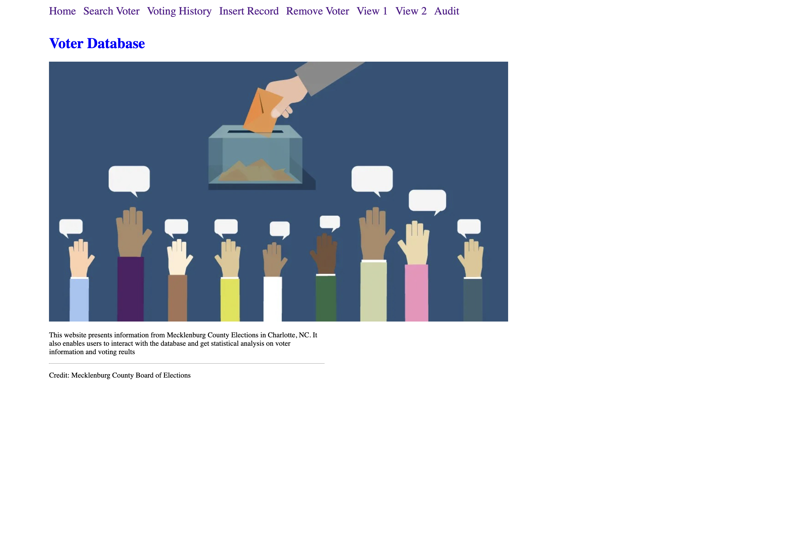
Welcome page with project purpose and navigation.
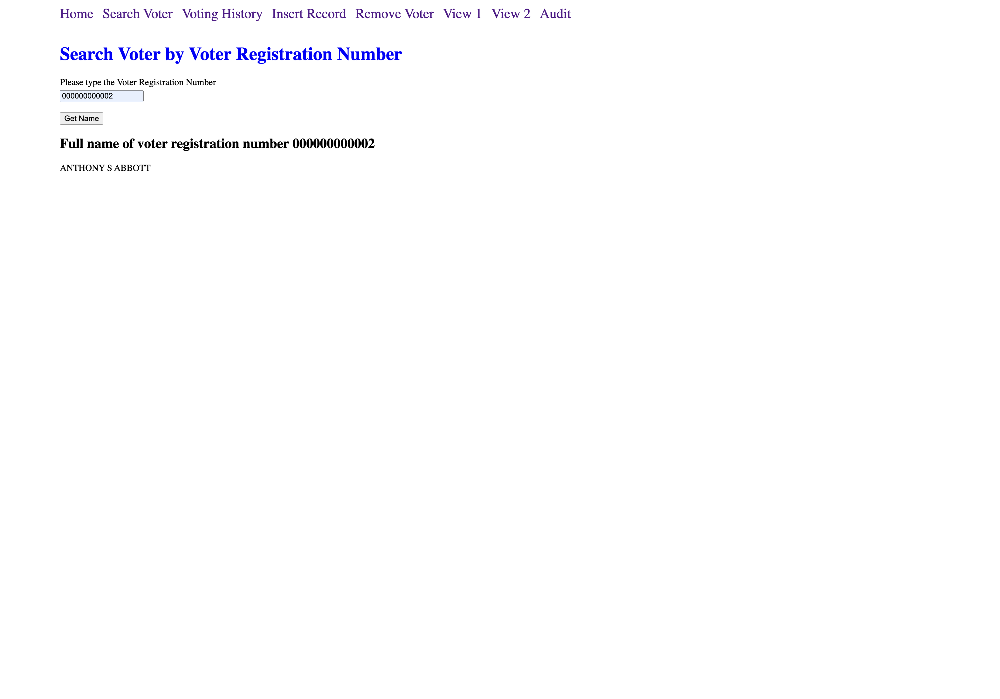
Search a voter by registration number.
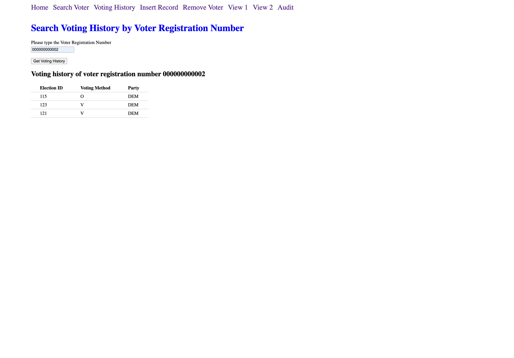
Check voting history by election ID and party.
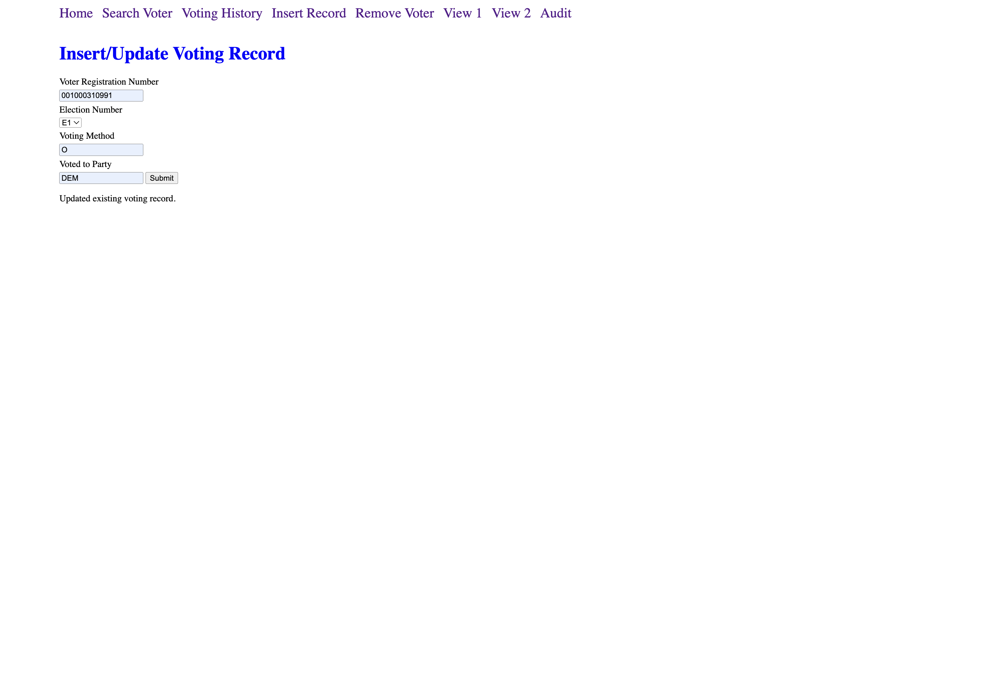
Insert or update a voter’s record securely.
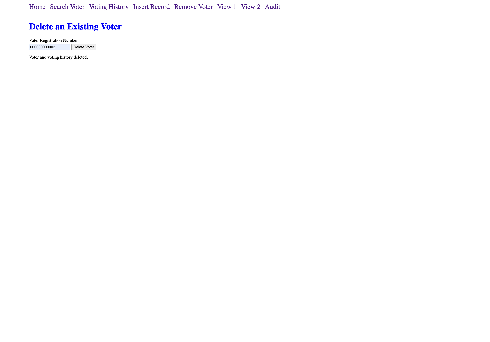
Delete a voter and remove all associated data.
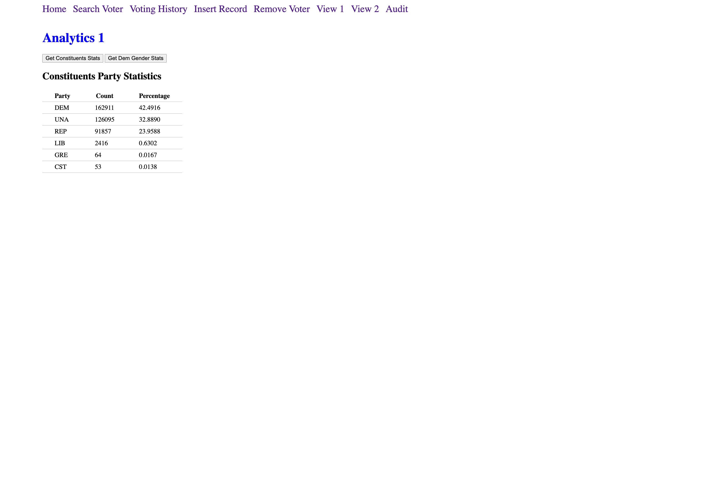
Analytics 1: Party breakdown for Democratic voters.
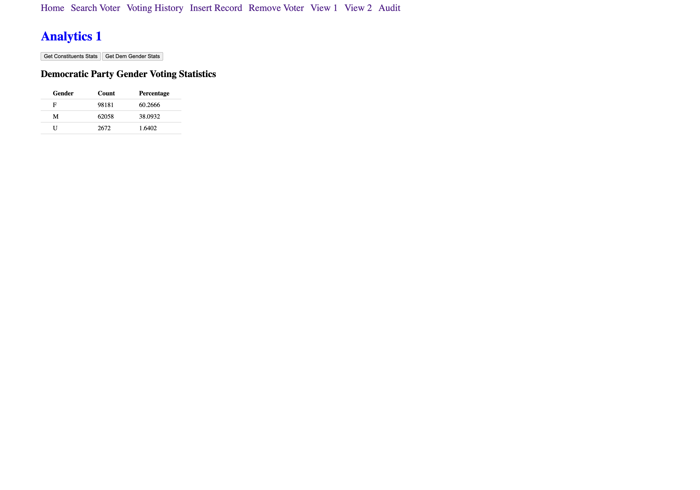
Analytics 1: Gender distribution for Democratic voters.
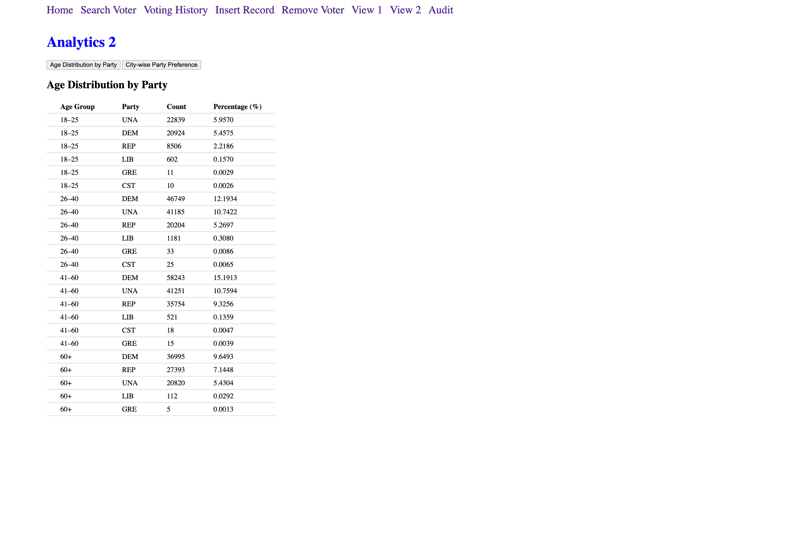
Analytics 2: City-wise party preferences.
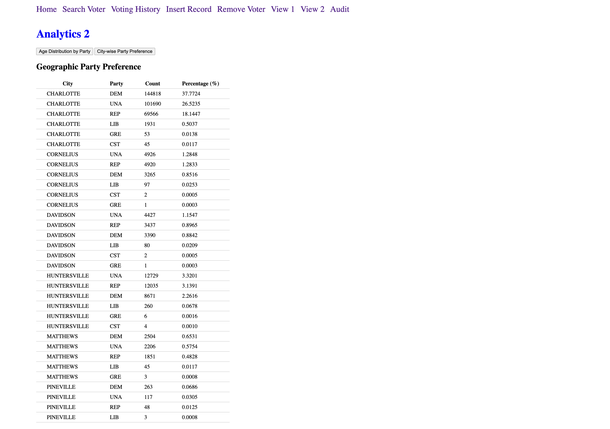
Analytics 2: Age-wise political alignment.
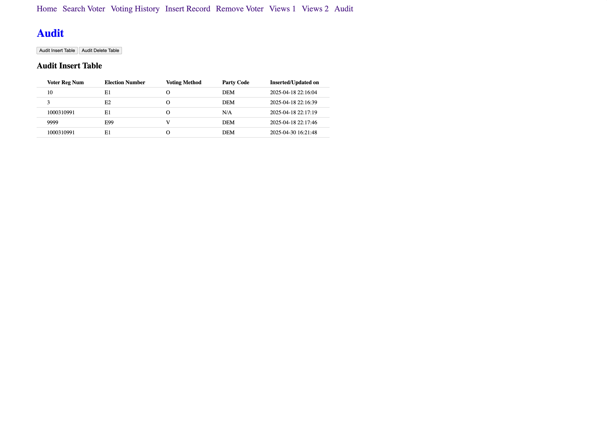
Audit log for inserts, including timestamp tracking.
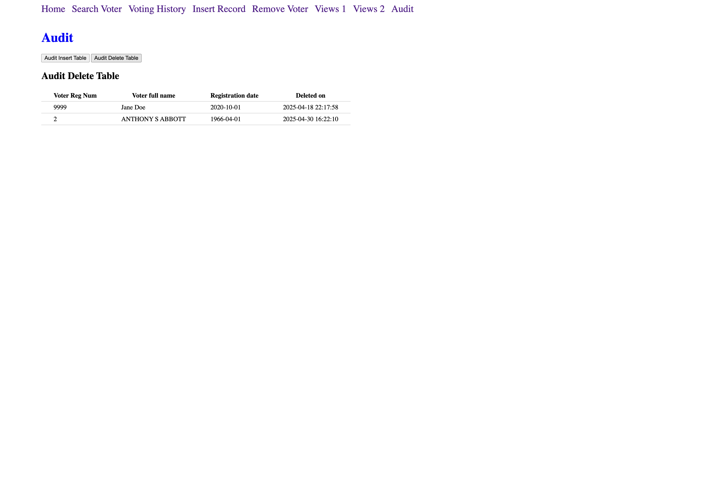
Audit log for deletions ensuring accountability.